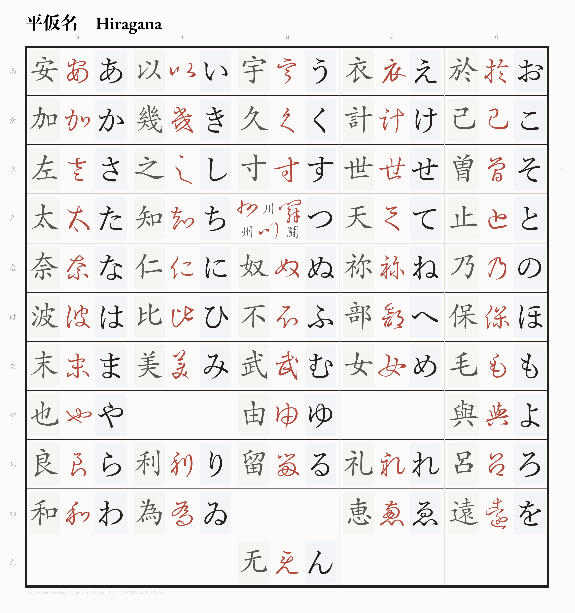
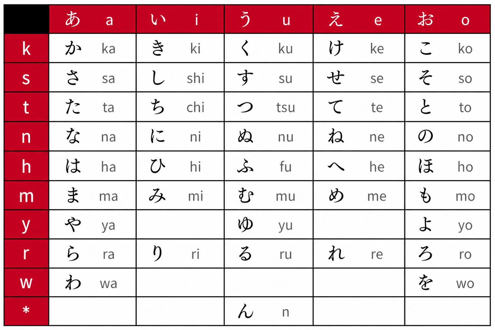
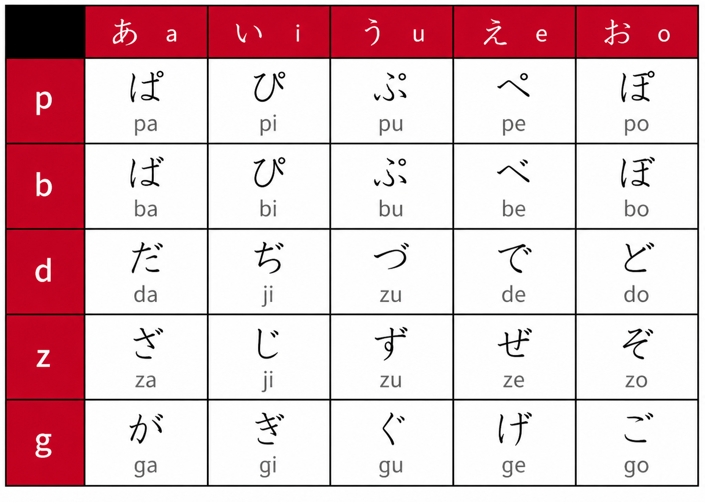

Hiragana (平仮名 oder ひらがな) ist eine der drei japanischen
Schriftarten und bildet die grundlegende japanische Silbenschrift.
Sie entstand etwa im 9. Jahrhundert während der Heian-Zeit aus den
kursiven Schreibformen der Kanji. Da Kanji als sehr komplex galten,
wurden sie im Laufe der Zeit vereinfacht, woraus die beiden
Kana-Schriften Hiragana und Katakana entstanden. Historiker gehen
davon aus, dass dieser Wandel unter anderem von buddhistischen
Priestern angestoßen wurde, die Kanji als ungeeignet ansahen, die
japanische Sprache präzise abzubilden, und deshalb ein phonetisches
Schriftsystem bevorzugten.
Anfangs wurde Hiragana nicht von allen gesellschaftlichen Gruppen
akzeptiert. Die gebildete Oberschicht bevorzugte weiterhin das
traditionelle Kanji-System. Während Männer überwiegend die formelle
Kanji-Schrift (Kaisho) verwendeten, nutzten Frauen häufiger die
kursiven Schriftformen (Sōsho), aus denen sich Hiragana entwickelte.
Da Frauen im historischen Japan oft keinen Zugang zur gleichen Bildung
wie Männer hatten, verbreitete sich Hiragana zunächst vor allem unter
Hofdamen für persönliche Briefe und literarische Werke. Daher wurde
Hiragana früher auch Onnade (女手) genannt, was übersetzt
„Frauenschrift“ bedeutet.
Hiragana gehört zu den sogenannten Silbenschriften (Syllabograms),
da jedes Zeichen in der Regel einem Laut bzw. einer Silbe der
japanischen Sprache entspricht. Heute wird Hiragana vielseitig
verwendet: vor allem für Verb- und Adjektivendungen, grammatikalische
Partikeln (z. B. は, を, に) sowie für Wörter, deren Kanji selten oder
unbekannt sind. Außerdem dient Hiragana als Furigana – kleine
Lautschriftzeichen über oder neben Kanji, die deren Aussprachehilfe
anzeigen, etwa in Mangas, Kinderbüchern oder Sprachlernmaterialien.
Auch japanische Kinder lernen zunächst Hiragana, da es die Grundlage
für das Lesen und Schreiben der Sprache bildet.
Hiragana
平仮名 oder ひらがな


Die Hiragana-Tabelle ist nach einem einfachen Prinzip aufgebaut:
Die linke Spalte zeigt die Konsonanten, die obere Zeile die Vokale
(a, i, u, e, o). Kombiniert man beides, entsteht eine Silbe –
zum Beispiel k + a = ka (か) oder m + i = mi (み). Da Hiragana eine
Silbenschrift ist, steht jedes Zeichen für genau eine Silbe.
Die daneben stehenden lateinischen Buchstaben nennt man Rōmaji. Sie dienen
nur als Annäherung an die japanische Aussprache, da das Japanische
ursprünglich kein lateinisches Alphabet verwendet.
Es gibt einige Ausnahmen bei der Aussprache:
s + i werden nicht si, sondern shi (し)
t + i werden nicht ti, sondern chi (ち)
t + u werden nicht tu, sondern tsu (つ)
h + u werden nicht hu, sondern fu (ふ)
Eine weitere Besonderheit ist ん (n) – es ist der einzige Konsonant,
der im Japanischen allein stehen kann, ohne mit einem Vokal kombiniert
zu werden.

Zusätzliche Laute im Hiragana werden durch kleine diakritische
Zeichen gebildet.
Die zwei Striche ゛nennt man Dakuten (auch Ten-Ten). Sie verändern
stimmlose Laute zu stimmhaften Lauten, zum Beispiel wird aus k ein
g (か → が), aus s ein z (さ → ざ), aus t ein d (た → だ) und aus h
ein b (は → ば).
Der kleine Kreis „゜“ heißt Handakuten (auch Maru). Er wird nur bei der
h-Reihe verwendet und verändert diese zur p-Reihe, also pa, pi, pu, pe,
po (は → ぱ, ひ → ぴ, ふ → ぷ, へ → ぺ, ほ → ぽ). Dadurch erweitert sich
das Lautsystem des Hiragana um weitere wichtige Silben.